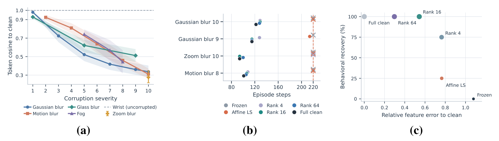
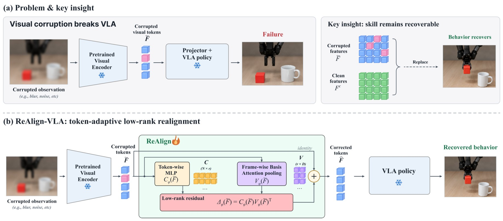
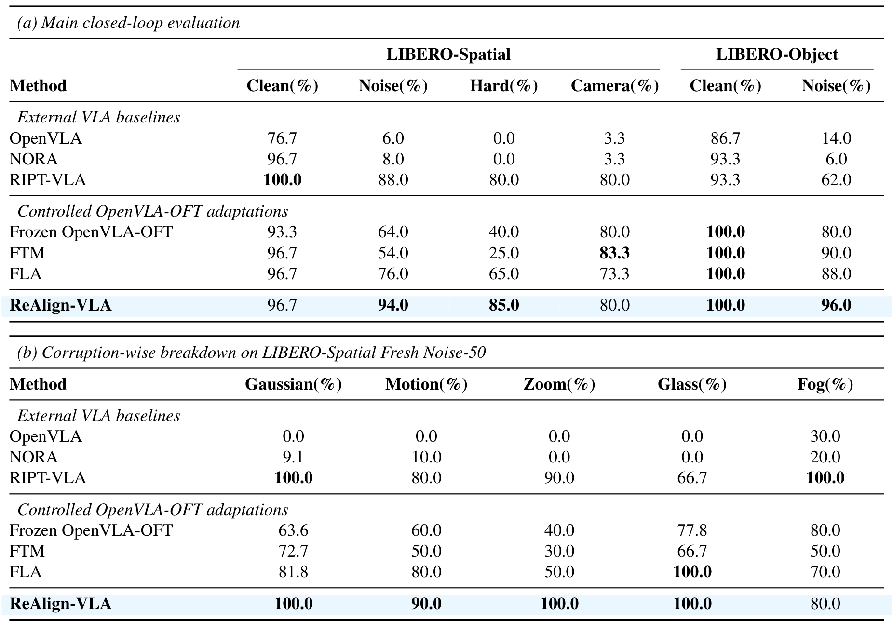
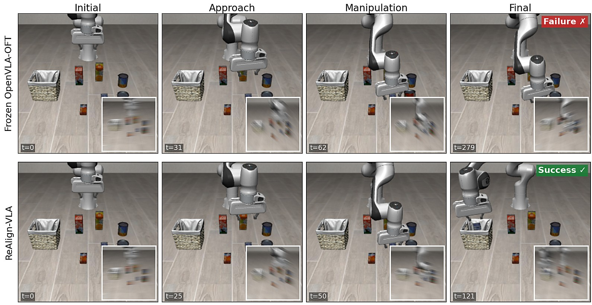

Abstract
Vision–language–action (VLA) policies can fail sharply under visual corruption despite strong nominal performance. We show that such failures can arise from distorted policy-facing visual representations while the underlying manipulation capability remains recoverable. Motivated by this finding, we introduce ReAlign-VLA, a lightweight post-encoder framework that restores corrupted agent-view features using token-adaptive low-rank residuals while keeping the pretrained VLA frozen. ReAlign is trained from paired clean and synthetically corrupted source-domain observations and requires neither action supervision nor test-time adaptation. On LIBERO-Spatial Fresh Noise-50, ReAlign achieves 94% success, substantially outperforming frozen OpenVLA-OFT and matched feature-adaptation baselines while preserving clean performance. The same Spatial-trained adapter reaches 96% under noise on LIBERO-Object without Object-specific adaptation. These results show that realigning corrupted visual representations can recover robust manipulation without relearning the underlying policy.
Analysis on Visual-Corruption Failures

(a) Corruption induces view-specific representation drift. (b) Clean-feature intervention restores failed behavior. (c) Similar feature fidelity can yield different behavioral recovery.
We analyze frozen OpenVLA-OFT on LIBERO-Spatial under sensor corruptions. As severity increases, the agent-view representation drifts steadily away from its clean counterpart, while the uncorrupted wrist stream stays intact (a). Replacing only the corrupted agent-view features with clean ones turns every failed episode into a success, ending at exactly the same step as the clean rollout (b): the manipulation skill is still there, but the policy cannot reach it through the corrupted representation. A privileged channel-wise affine correction shared across tokens recovers only one of four failures, whereas token-varying corrections recover far more (c), showing that restoration must be token-specific.
ReAlign-VLA

Overview of ReAlign-VLA. (a) Corruption distorts policy-facing tokens, while clean features restore behavior. (b) ReAlign predicts a token-adaptive low-rank residual before the frozen VLA policy.
ReAlign-VLA inserts a lightweight module between the frozen visual encoder and the frozen policy, and corrects only the corrupted agent-view tokens. From the current frame, an attention-pooling branch builds a small set of shared feature-space correction directions, and a token-wise MLP decides how strongly each token combines them. The result is a token-adaptive low-rank residual added to the corrupted features before they enter the projector. ReAlign is trained offline on clean source-domain frames paired with synthetic corruptions, using clean features as targets with cosine, normalized reconstruction and intervention-magnitude terms. It needs no action labels, no policy gradients and no test-time adaptation.
Results

(a) Task success rate (%) on LIBERO-Spatial and LIBERO-Object; Hard is the L4 subset of Spatial Fresh Noise-50. (b) Breakdown of Spatial Fresh Noise-50 by corruption family.
On LIBERO-Spatial Fresh Noise-50, ReAlign-VLA reaches 94% success, compared with 64% for frozen OpenVLA-OFT and 76% for the matched FLA baseline, and 85% on the severe L4 subset, while keeping clean performance. The Spatial-trained adapter transfers directly to LIBERO-Object, reaching 96% under noise with 100% clean success.
Qualitative Results

Rollouts under severe blur (inset: corrupted agent view). Frozen OpenVLA-OFT fails, while ReAlign-VLA completes the task.
Under the same severe blur, the frozen policy approaches the object but never completes the task, whereas ReAlign-VLA places it in the basket in fewer than half the steps.